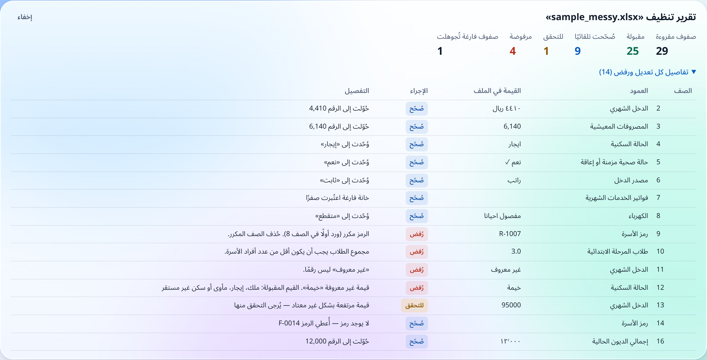
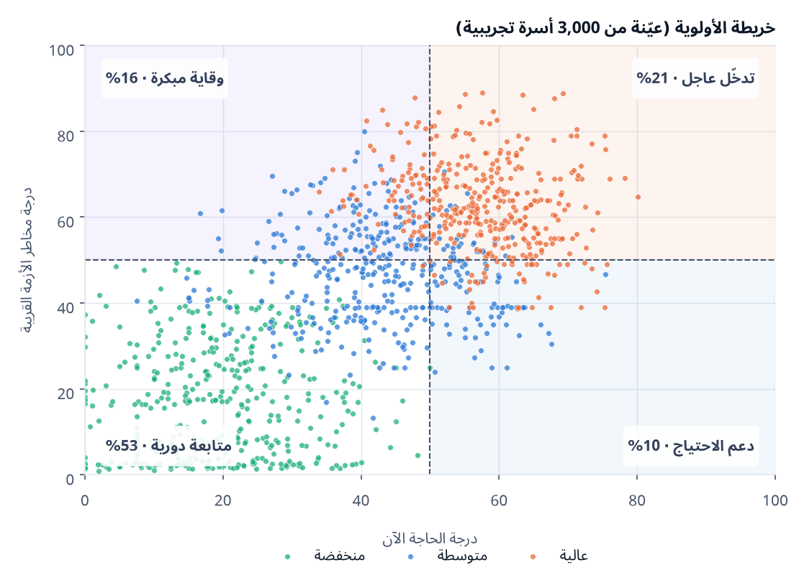
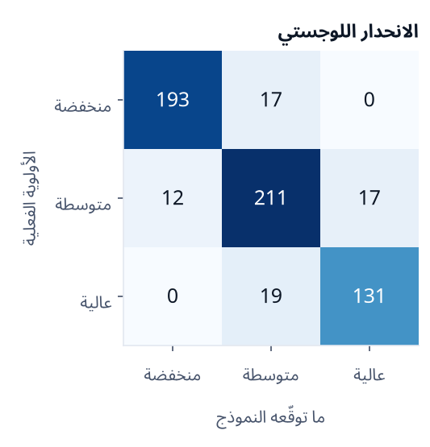
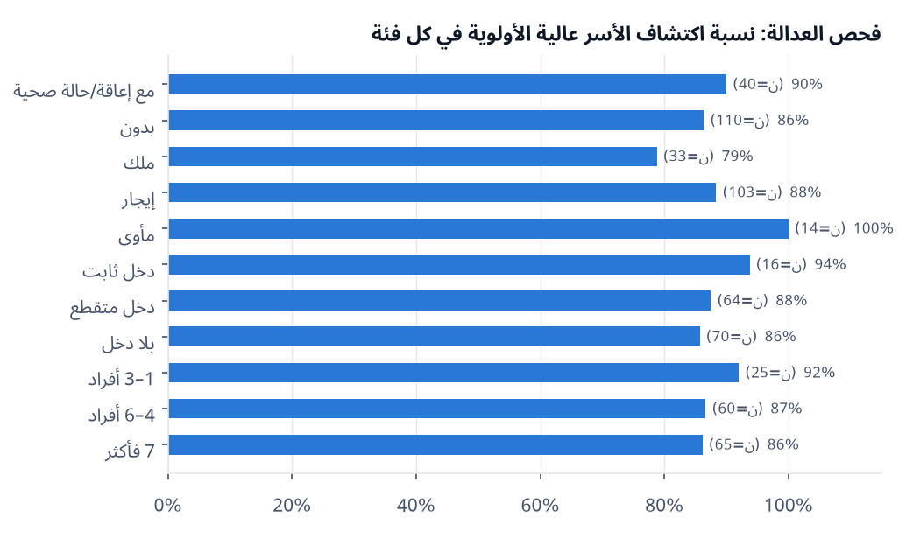
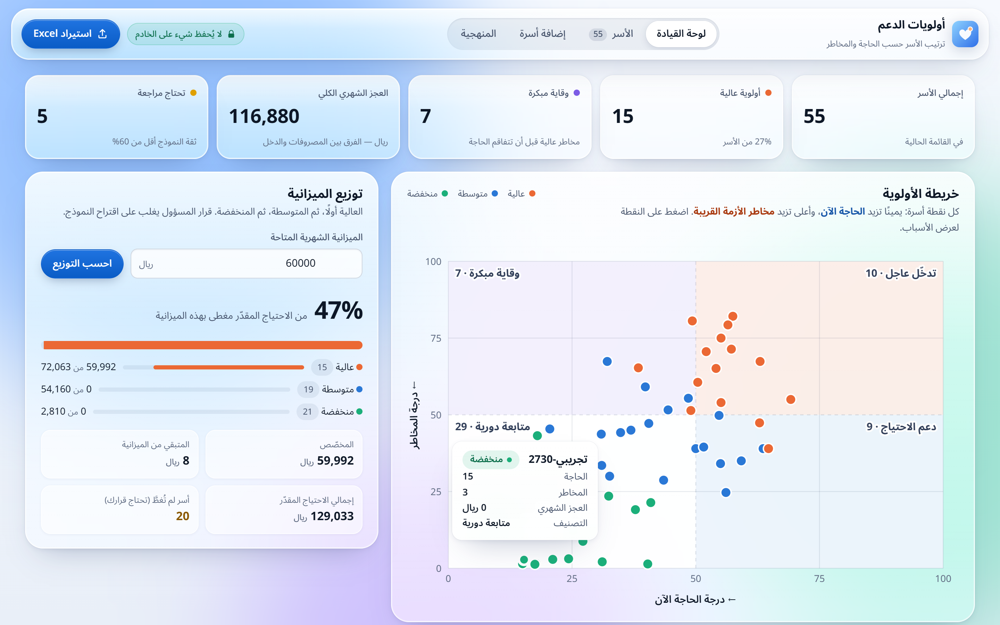

ترتيب أولويات التبرعات حسب حاجة الأسرة الآن ومخاطر الأزمة القريبة — للوصول إليها قبل أن تقع الأزمة
إعداد: مرام المطيري | ريم المطيري
أكتوبر 2026 · تحليل بيانات وتعلّم آلة قابل للتفسير · بيانات تجريبية مضبوطة على إحصاءات سعودية
المعيار 1 — سؤال القطاع غير الربحي والقرار
طلبات كثيرة، وميزانية محدودة، ونصل غالبًا بعد الأزمة
المقارنة صعبة
دراسة الحالات يدوية، والترتيب يعتمد على التقدير الشخصي.
نصل متأخرين
الترتيب حسب العجز الحالي يؤخّر الأسرة الهشّة حتى تُفصل كهرباؤها أو تتعثر في قسطها.
التوزيع يحتاج تبريرًا
المتبرعون والأسر يسألون: لماذا هذه الأسرة أولًا؟
السؤال: أي الأسر ندعم أولًا هذا الشهر، وأيها نصل إليه وقائيًا، بطريقة عادلة ومفسَّرة يبقى فيها القرار للجمعية؟ القرار: ترتيب الأسر (عالية / متوسطة / منخفضة) + توزيع الميزانية، ويعتمده المسؤول عن التوزيع.
أولويات الدعم2
الحل: من ملف Excel إلى قرار مفسَّر في دقيقة
1
ارفع ملف Excel
قالب جاهز بقوائم منسدلة. يُقرأ في الذاكرة ثم يُهمل، فلا يُخزَّن شيء.
←
2
تنظيف موثّق
تصحيح الأرقام والإملاء، ورفض المكرر والمستحيل، مع تقرير لكل صف.
←
3
درجتان + نموذج
الحاجة الآن ومخاطر الأزمة، ثم أولوية من نموذج قابل للتفسير.
←
4
قرار المسؤول
يراجع ويعدّل ويوزّع الميزانية، ثم يصدّر Excel وPDF.
18حقلًا: الطلاب حسب المرحلة، والديون والقسط، والإيجار والفواتير
12ميزة مختارة بالتحليل
87%F1 للنموذج المختار
33اختبارًا آليًا ناجحًا
أولويات الدعم3
لماذا درجتان؟ أسرتان في الشهر نفسه
الأسرة (أ): عجز واضح الآن
دخل تقاعد ثابت 2,800 · مصروفات 5,000 · مسكن ملك · بلا دين · خدمات منتظمة
الحاجة 40 · المخاطر 16
منخفضةمتابعة دورية
الأسرة (ب): «تتدبّر أمورها» لكنها هشّة
دخل متقطع 6,400 · إيجار 2,000 · دين 24,000 بقسط 800 · الكهرباء تنقطع
الحاجة 29 · المخاطر 56
متوسطةوقاية مبكرة
الترتيب التقليدي يرى (أ) فقط. درجة المخاطر تكشف (ب) قبل أن يتحوّل الدين والانقطاع إلى أزمة.
لكن بوزن 50/50 تأتي (أ) منخفضة رغم عجز 2,200 ريال. هذا قرار قيمي للجمعية، والأوزان قابلة للتعديل من مكان واحد.
أولويات الدعم4
المعيار 2 — البيانات والتوثيق
بيانات مضبوطة على أرقام الأسرة السعودية
المؤشر
المتقدّمون (تجريبي)
المتوسط السعودي
حجم الأسرة
5.2
4.8 (تعداد 2022)
دخل الفرد الشهري
1,252
2,741 (مسح الدخل 2018)
تملّك المسكن
39%
65.4% (الإسكان 2024)
حد القسط من الراتب
≤ 33%
33.33% (البنك المركزي)
أسر عليها دين
55%
—
لماذا تجريبية؟
بيانات الأسر السعودية الخام سرية، ولا يجوز اختراع بيانات حقيقية. ولّدنا 3,000 أسرة بسكربت موثّق (seed=42).
10 مراجع موثّقة
7 سعودية (الإحصاء، والتعداد، والإسكان، والبنك المركزي، وسدايا)، ومرجع للمنهجية (أكسفورد)، ومرجعان لأدوات التحليل. كل الروابط مختبرة في قائمة مراجع التقرير.
أولويات الدعم5
المعيار 2 — جودة تنظيف البيانات
تنظيف لا يغيّر شيئًا بصمت
«٣٬٥٠٠ ريال» ← 3500
«ايجار» = «إيجار»، و«راتب» = «ثابت»
الفارغ في الديون والفواتير ← صفر (مُسجَّل)
رفض: رمز مكرر، وطلاب أكثر من الأفراد، وقيمة مجهولة
القيم الشاذة تُقبل وتُعلَّم للتحقق
25/29صفًا مقبولًا
9صُحّحت تلقائيًا
4رُفضت بسبب واضح
0مخالفات في 3,000 أسرة

أولويات الدعم6
ما الذي يرفع الأولوية؟

أقوى المؤشرات
الفائض أو العجز (MI = 0.60)، ودخل الفرد مقارنة بالمتوسط السعودي (0.43)، وعبء الإيجار والفواتير (0.30)، ومصدر الدخل (0.22).
16% وقاية مبكرة
حاجتهم الحالية أقل من 50، لكن مخاطرهم مرتفعة. 99% منهم حصلوا على أولوية متوسطة أو عالية.
12 ميزة من 19
استبعاد المكرر (ارتباط > 0.8)، واختيار الأوضح تفسيرًا من كل مجموعة.
أولويات الدعم7
المعيار 3 — استراتيجية التحليل
درجتان بأوزان معلنة: كل نقطة لها سبب
الحاجة الآن (من 100)
المصروفات أعلى من الدخل35
دخل الفرد مقارنة بالمتوسط السعودي25
السكن (ملك / إيجار / مأوى)15
أعباء الدراسة حسب المرحلة15
الكهرباء والماء والإنترنت10
مخاطر الأزمة القريبة (من 100)
عدم ثبات الدخل20
القسط ÷ الدخل (الحد 33% — البنك المركزي)20
الإيجار والفواتير ÷ الدخل15
حالة صحية أو إعاقة15
حجم الدين ÷ الدخل السنوي10
هامش أمان ضيق10
انقطاع الكهرباء أو الماء10
أولويات الدعم8
المعيار 3 — صحة التحليل
نموذج يمكن شرحه، لا «صندوق أسود»
600 أسرة اختبار
شجرة القرار
الانحدار اللوجستي ✓
F1 بالتحقق المتقاطع (5-fold)
80.6%
87.3%
الدقة
79.5%
87.3%
الضبط
79.0%
87.0%
الاستدعاء
80.7%
87.6%
F1
79.3%
87.3%
اكتشاف الأولوية العالية
84.7%
87.3%

لا خلط بين «عالية» و«منخفضة». كل الأخطاء بين فئتين متجاورتين، والحالات التي تقل ثقة النموذج فيها عن 60% تُعلَّم للمراجعة.
إصدارات المكتبات مثبّتة في requirements.txt ومسجّلة مع المقاييس.
الدفتر يُبنى ويُنفَّذ بسكربت، فلا خلايا قديمة أو نتائج منسوخة.
الخادم يعيد الحساب ولا يثق بأي درجة قادمة من المتصفح.
أولويات الدعم10
المعيار 4 — الذكاء الاصطناعي والأتمتة بمسؤولية
مسؤولية مبنية في الأداة، لا مكتوبة فقط
الإنسان يقرر
قرار المسؤول يغلب على النموذج في الترتيب والتوزيع، ولا إقصاء آلي.
الخصوصية من التصميم
لا اسم ولا هوية، ولا قاعدة بيانات، والملف يُقرأ في الذاكرة فقط.
ذكاء اصطناعي بضوابط
استعنّا بـ Claude في البناء: لا بيانات حقيقية، وكل رقم من ملفات المخرجات، مع 33 اختبارًا ومراجعة مستقلة.

فجوة نعلنها: اكتشاف العالية 81% للأسر المالكة مقابل 95% لذوي الإعاقة. نتابعها في التجربة الموازية.
أولويات الدعم11
الأداة: لوحة قيادة زجاجية بلا تخزين

أولويات الدعم12
المعيار 5 — قصة الأثر
من «نصل بعد الأزمة» إلى «نصل قبلها»
محاكاة على 3,000 أسرة تجريبية: جمعية تدعم ربع المتقدّمين، أي 750 أسرة بالعدد نفسه في الطريقتين.
أسر «الوقاية المبكرة» التي نصل إليها0 ← 120الحاجة فقط ← أداتنا (من 494)
أسر مهددة بانقطاع الخدمات269 ← 322+20% (من 724)
أسر قسطها فوق حد البنك المركزي56 ← 71كلها (من 71)
كم تكفي الميزانية؟
العجز الشهري الكلي 6.74 مليون ريال، والدعم المقترح مع الاحتياطي الوقائي 7.52 مليون. مليون ريال تغطي 14.8% من العجز (13.3% من الدعم المقترح)، وتذهب أولًا للأولوية العالية.
رسالة للمتبرع: كل ريال يذهب أولًا لمن هم في الخطر، وكل أسرة لم تُغطَّ ظاهرة باسم رمزها لقرار المسؤول.
أولويات الدعم13
المعيار 5 — التوصيات
التوصيات وخارطة الطريق
للجمعية
تجربة موازية 3 أشهر دون أثر على القرار.
قرار أوزان الحاجة والمخاطر (50/50 أم 60/40).
نموذج موافقة للأسر متوافق مع نظام حماية البيانات الشخصية.
إعادة التدريب على قرارات الجمعية الحقيقية.
مراقبة فجوة العدالة لدى الأسر المالكة.
المدة
المرحلة
الشهر 1
مراجعة الأوزان، والموافقات، والصلاحيات
الأشهر 2–4
تجربة موازية مع الأخصائيين
الشهر 5
المقارنة، وفحص العدالة، وإعادة التدريب
الشهر 6
قرار الاعتماد
أولويات الدعم14
التقييم يساعد الجمعية على أن تصل أسرع وأعدل والقرار يبقى دائمًا لها.
2درجتان مفسَّرتان
87%F1 بنموذج قابل للتفسير
120أسرة وقائية بدل الصفر (بالعدد نفسه)
0بيانات مخزّنة
نتائج على بيانات تجريبية (3,000 أسرة مبنية على إحصاءات سعودية رسمية)